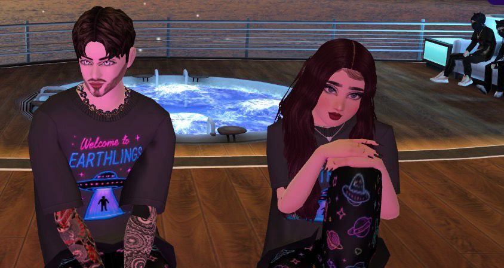
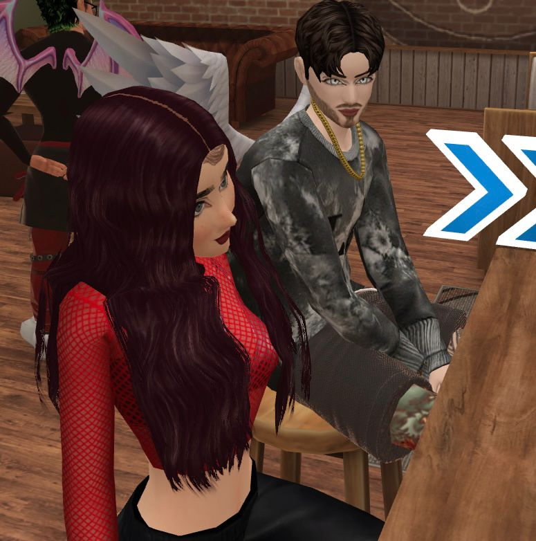
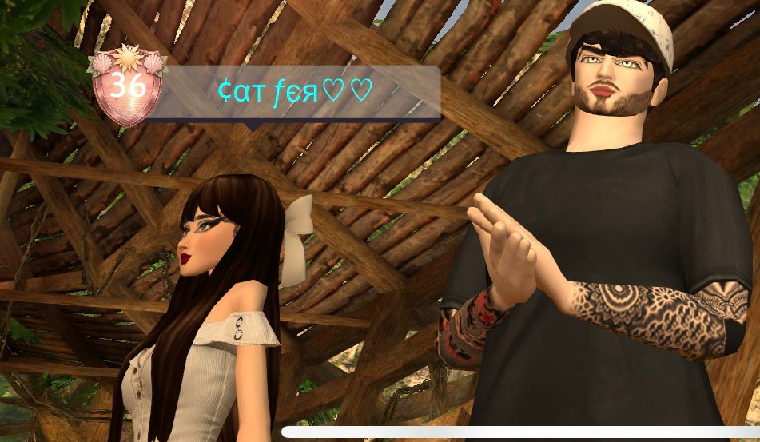
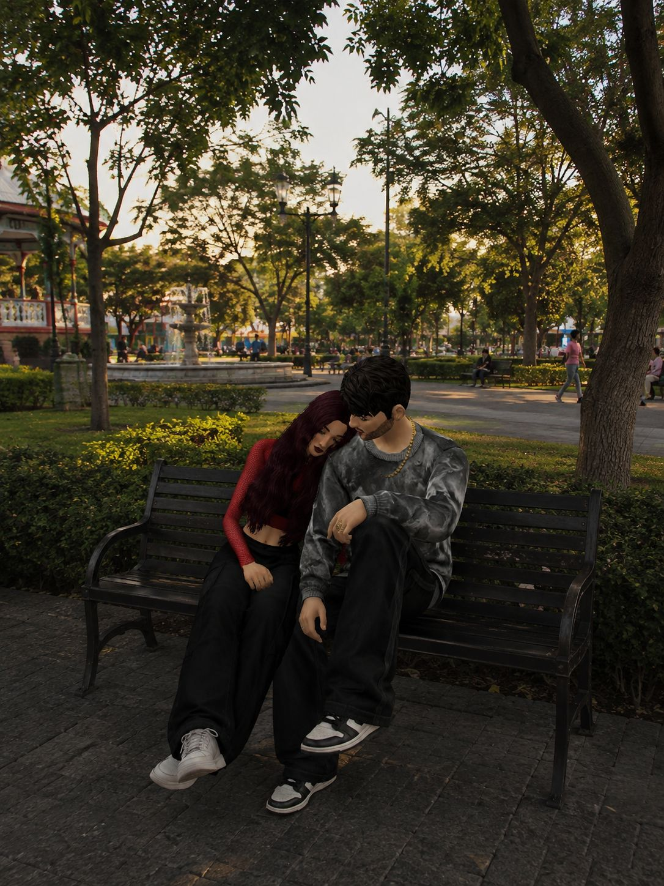
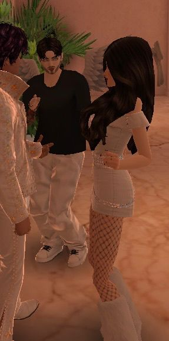

PROGRAMA 03 · ARCHIVO ESPECIAL
Archivo de recuerdos 📸
Porque algunas fotografías solamente guardan
momentos...
pero estas guardan pedacitos de nosotros. 🥺❤️

Un momento que guardaría una y otra vez.

Porque hasta los momentos sencillos contigo se sienten especiales.

Una pequeña memoria de mi niña que quiero guardar para siempre.

Otro pedacito de nuestra historia, de esos que hacen sonreír al Vampii.

Porque mi lechuzina merece tener un lugar especial aquí.

Y este archivo todavía está incompleto... porque todavía nos faltan muchísimos recuerdos.
“Si algún día mi niña olvida lo mucho que significa para su Vampii, solamente tendrá que abrir este archivo.” 🥺❤️